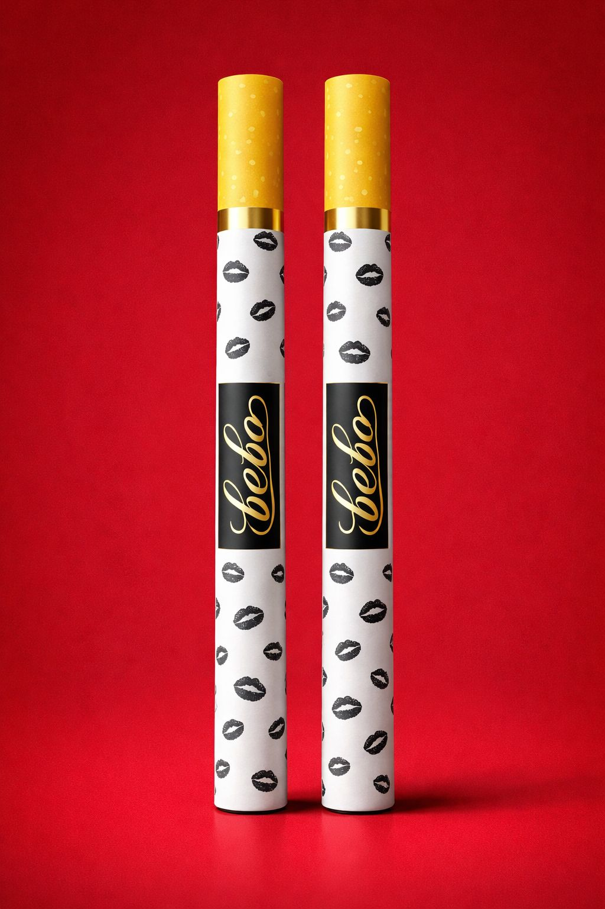

Haz clic en el botón ☰ para abrir el menú lateral.
¡Bienvenidos!
Bienvenido a Cigarros de Proteína, la alternativa innovadora y saludable para los amantes del fitness que disfrutan de la experiencia del cigarro con un enfoque más saludable. Diseñado especialmente para quienes buscan una opción más segura, nuestros cigarros están elaborados con proteína, vitaminas y antioxidantes, ofreciendo un beneficio nutricional mientras disfrutas de un momento único. Aunque contienen una pequeña cantidad de tabaco, están pensados para aquellos que desean disfrutar de este ritual sin los efectos dañinos del tabaco tradicional. Descubre cómo Cigarros de Proteína puede acompañar tu estilo de vida activo de manera saludable."

Nota: "Bebo está revolucionando el mercado con una propuesta única:
un cigarro nutritivo que fusiona el placer de fumar con los beneficios de la proteína y nutrientes esenciales.
Una marca que redefine el concepto de bienestar y salud para quienes buscan alternativas más saludables sin sacrificar el estilo."

Transforma tu experiencia
"Redefine lo que significa disfrutar de un cigarro. Con Cigarros de Proteína, no solo disfrutas del ritual de fumar, sino que también incorporas nutrientes esenciales que complementan tu estilo de vida activo. Una alternativa más saludable, diseñada para los que buscan un equilibrio entre placer y bienestar."
"Redefine lo que significa disfrutar de un cigarro. Con Cigarros de Proteína, no solo disfrutas del ritual de fumar, sino que también incorporas nutrientes esenciales que complementan tu estilo de vida activo. Una alternativa más saludable, diseñada para los que buscan un equilibrio entre placer y bienestar."
Características del Producto:
- Proteína de alta calidad: Cada cigarro contiene proteínas esenciales que apoyan la regeneración muscular.
- Con un toque de tabaco: Aunque contiene una pequeña cantidad de tabaco, no tiene los efectos dañinos del tabaco tradicional, ofreciendo una alternativa menos perjudicial
- Vitaminas y antioxidantes: Refuerza el sistema inmunológico y favorece la salud celular.
- Diseñado para el fitness: Ideal para quienes buscan una alternativa saludable mientras mantienen un estilo de vida activo..
- Aroma y sabor similares: Ofrece una experiencia parecida a la de un cigarro convencional, pero con beneficios para la salud.
- Fácil de consumir: Disfrútalo en cualquier momento del día, sin afectar tu bienestar.

"𝐃𝐢𝐬𝐟𝐫𝐮𝐭𝐚 𝐝𝐞 𝐜𝐚𝐝𝐚 𝐢𝐧𝐡𝐚𝐥𝐚𝐜𝐢ó𝐧 𝐲 𝐝𝐞 𝐜𝐚𝐝𝐚 𝐞𝐱𝐡𝐚𝐥𝐚𝐜𝐢ó𝐧, 𝐬𝐚𝐛𝐢𝐞𝐧𝐝𝐨 𝐪𝐮𝐞 𝐥𝐨 𝐪𝐮𝐞 𝐞𝐬𝐭á𝐬 𝐞𝐱𝐩𝐮𝐥𝐬𝐚𝐧𝐝𝐨 𝐞𝐬 𝐛𝐞𝐧𝐞𝐟𝐢𝐜𝐢𝐨𝐬𝐨 𝐩𝐚𝐫𝐚 𝐭𝐮 𝐜𝐮𝐞𝐫𝐩𝐨, 𝐧𝐨 𝐝𝐚ñ𝐢𝐧𝐨."
Comentarios de Clientes:
⭐⭐⭐⭐⭐
"¡Increíble! Siempre me preocupó el impacto de fumar, pero con Cigarros de Proteína puedo disfrutar del ritual sin los efectos negativos. Me siento más saludable y mi rendimiento en el gimnasio ha mejorado."
⭐⭐⭐⭐⭐
"Nunca imaginé que un cigarro podría ser saludable. Me encanta la mezcla de proteína y antioxidantes. Es como si estuviera cuidando mi cuerpo mientras disfruto de algo que siempre me gustó. ¡Definitivamente lo recomendaré!"
⭐⭐⭐⭐⭐
"Como fumador habitual, me preocupaba dar el paso a algo más saludable, pero Cigarros de Proteína me sorprendió. No solo me satisface, sino que también siento que estoy mejorando mi salud. ¡Un cambio genial!"
⭐
"Lo probé esperando algo parecido a un cigarro normal, pero al no tener nicotina, no me dio la misma sensación. Aunque entiendo que es más saludable, si buscas la misma experiencia que un cigarro tradicional, este producto no es para ti."
Testimonios con fotos
Nota: "Por lo general aquí se encuentran los comentarios en anónimo por razones desconocidas"

Anónimo
⭐⭐⭐⭐⭐
"Es tan natural que hasta mi planta lo disfruta xd cigarros de Proteína, el toque saludable para todos!!!"
Anónimo
⭐⭐⭐
"Bueno gente, tengo una cita para este sabado con la chica que me gusta, no me decepciones cigarrito!! necesito estar en mi Prime 💪"
Anónimo
⭐⭐⭐
"Bueno gente, tengo una cita para este sabado con la chica que me gusta, no me decepciones cigarrito!! necesito estar en mi Prime 💪"
Este es un texto oculto que aparece con una animación elegante.
Preguntas Frecuentes:
¿Es Cigarro de Proteína completamente libre de tabaco?
No. Cigarros de Proteína contienen una pequeña cantidad de tabaco, pero no tiene los efectos dañinos del tabaco tradicional. Está diseñado con una mezcla de nutrientes saludables, incluyendo proteínas y antioxidantes, para ofrecer una experiencia más saludable.
¿Puedo sustituir un cigarro tradicional por un Cigarro de Proteína?
Aunque ofrece una experiencia similar, Cigarros de Proteína no contiene nicotina. Es una alternativa saludable para aquellos que buscan disfrutar del ritual sin los efectos nocivos del tabaco, pero no será un sustituto exacto de un cigarro convencional.
¿Este cigarro tiene los mismos efectos que un cigarro convencional?
No. Cigarros de Proteína están diseñados para brindar beneficios nutricionales sin los efectos dañinos del tabaco. Está pensado para quienes buscan un producto más saludable, pero no será exactamente igual a fumar un cigarro tradicional.
¿Cuántos Cigarros de Proteína puedo consumir al día?
Recomendamos moderar su consumo, ya que aunque es saludable, no es un producto diseñado para el consumo excesivo. Como con cualquier producto, la clave es el equilibrio.
¿Cuáles son los beneficios de consumir Cigarros de Proteína?
Ofrecen una dosis de proteínas, vitaminas y antioxidantes, lo que ayuda a mejorar la salud celular, apoyar la regeneración muscular y fortalecer el sistema inmunológico
¿Es Cigarros de Proteína adecuado para personas que practican deporte?
¡Sí! Es ideal para quienes buscan una alternativa saludable que complemente su estilo de vida activo. Proporciona nutrientes beneficiosos para la recuperación muscular después del entrenamiento y puede ser parte de una dieta equilibrada.
Contacto:
¿Tienes preguntas o deseas más información? ¡Contáctanos!